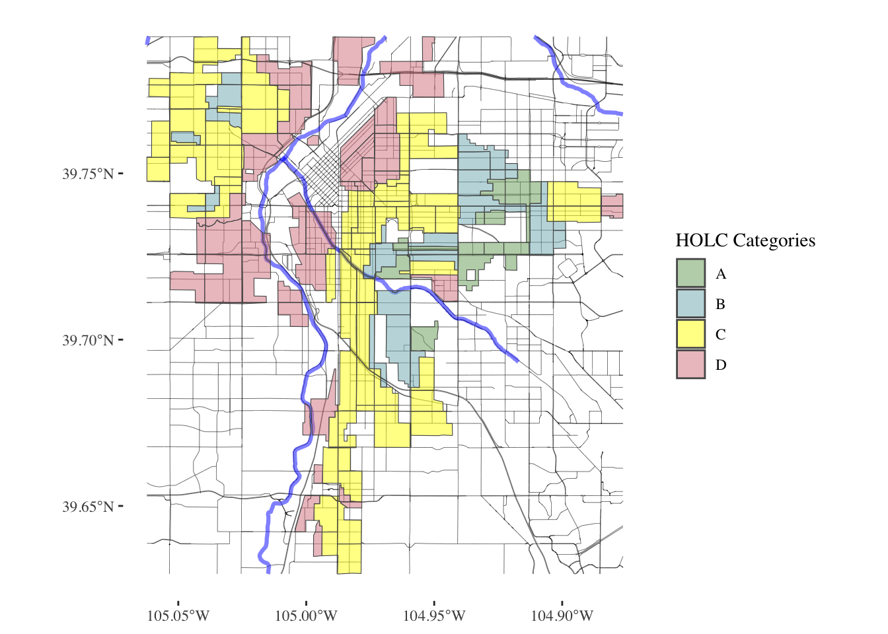
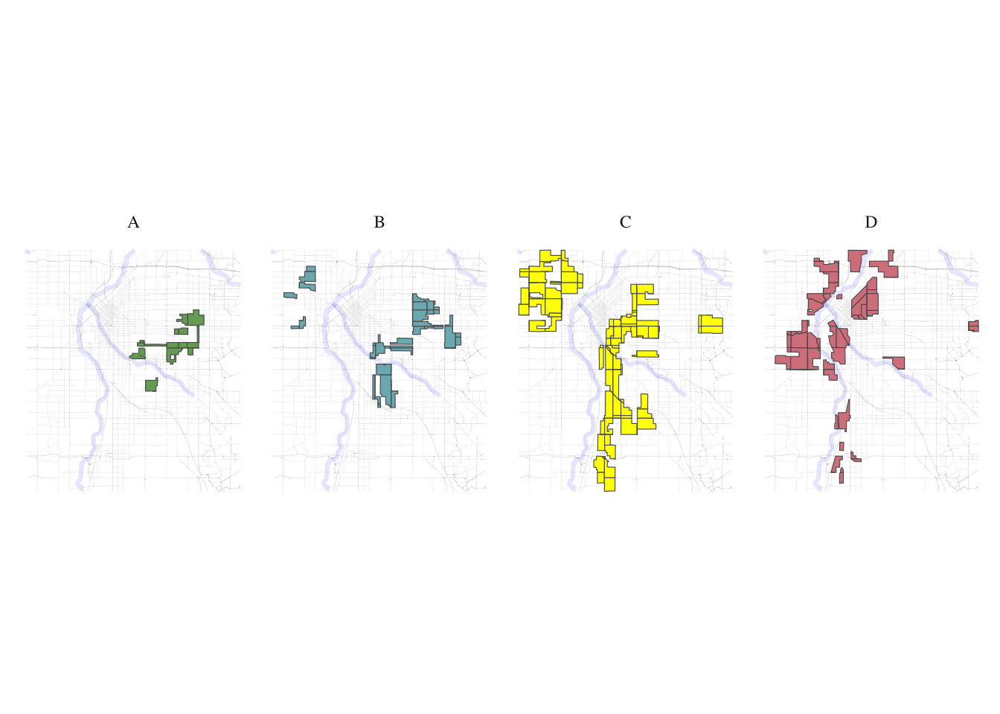
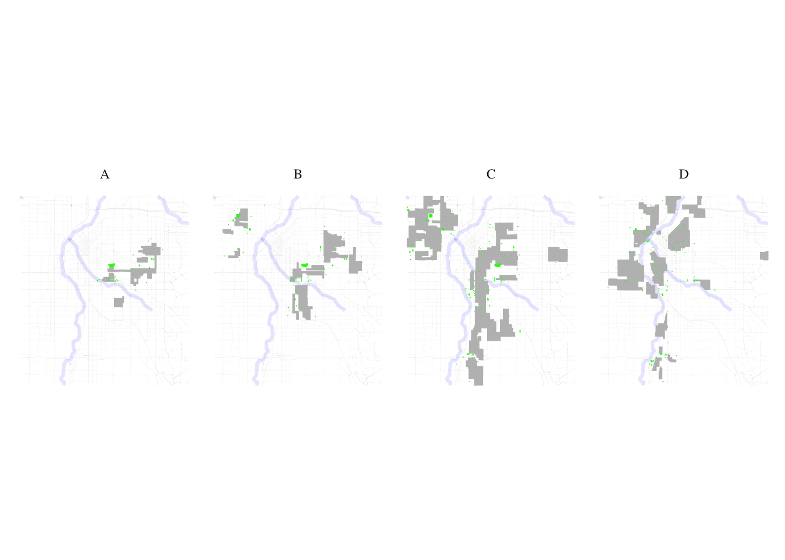
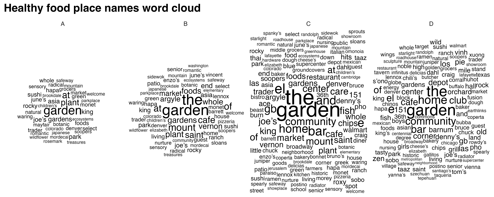
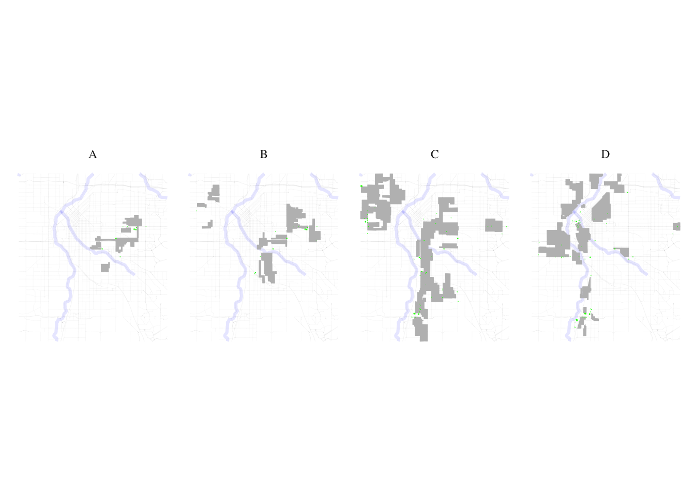
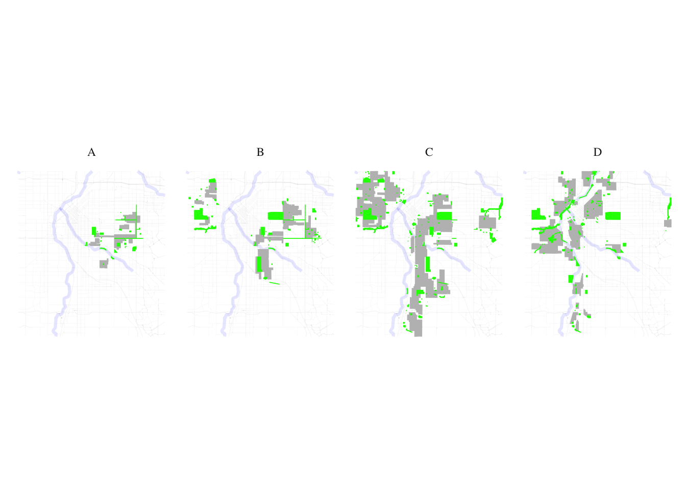
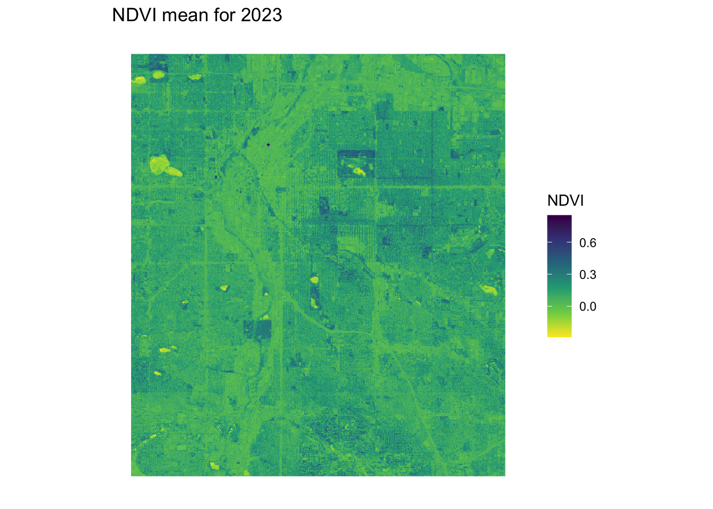
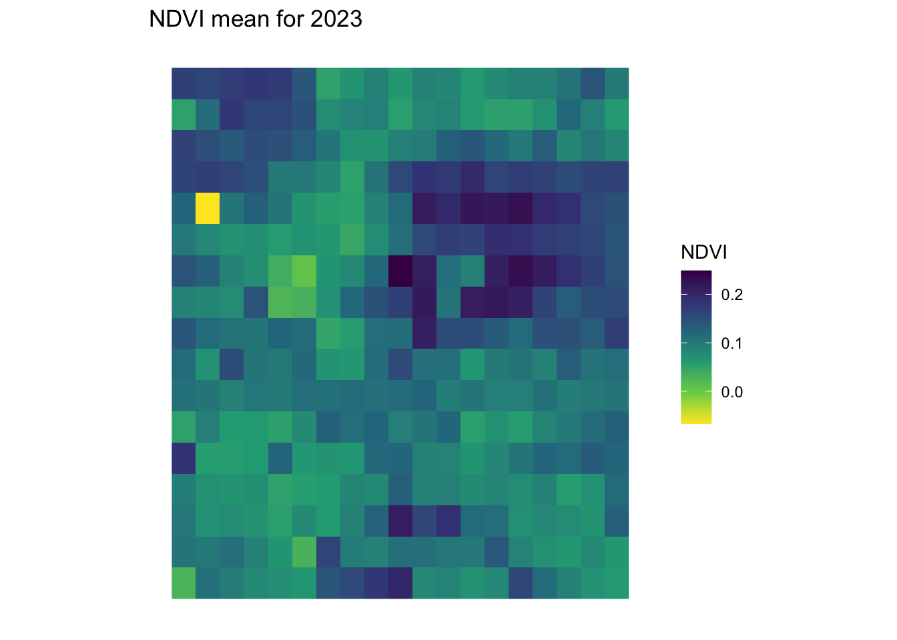
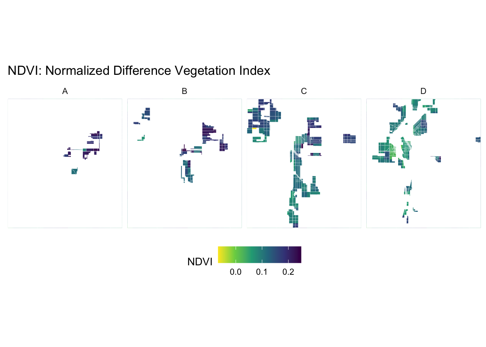

if (!requireNamespace("tidytext", quietly = TRUE)) {
install.packages("tidytext")
}
library(tidytext)
## Warning: package 'tidytext' was built under R version 4.3.2
library(sf)
## Warning: package 'sf' was built under R version 4.3.2
## Linking to GEOS 3.11.0, GDAL 3.5.3, PROJ 9.1.0; sf_use_s2() is TRUE
library(ggplot2)
## Warning: package 'ggplot2' was built under R version 4.3.2
library(ggthemes)
## Warning: package 'ggthemes' was built under R version 4.3.2
library(dplyr)
##
## Attaching package: 'dplyr'
## The following objects are masked from 'package:stats':
##
## filter, lag
## The following objects are masked from 'package:base':
##
## intersect, setdiff, setequal, union
library(rstac)
## Warning: package 'rstac' was built under R version 4.3.2
library(gdalcubes)
## Warning: package 'gdalcubes' was built under R version 4.3.2
library(gdalUtils)
## Please note that rgdal will be retired during October 2023,
## plan transition to sf/stars/terra functions using GDAL and PROJ
## at your earliest convenience.
## See https://r-spatial.org/r/2023/05/15/evolution4.html and https://github.com/r-spatial/evolution
## rgdal: version: 1.6-7, (SVN revision 1203)
## Geospatial Data Abstraction Library extensions to R successfully loaded
## Loaded GDAL runtime: GDAL 3.5.3, released 2022/10/21
## Path to GDAL shared files: /Library/Frameworks/R.framework/Versions/4.3-x86_64/Resources/library/rgdal/gdal
## GDAL does not use iconv for recoding strings.
## GDAL binary built with GEOS: TRUE
## Loaded PROJ runtime: Rel. 9.1.0, September 1st, 2022, [PJ_VERSION: 910]
## Path to PROJ shared files: /Library/Frameworks/R.framework/Versions/4.3-x86_64/Resources/library/gdalcubes/proj
## PROJ CDN enabled: FALSE
## Linking to sp version:1.6-1
## To mute warnings of possible GDAL/OSR exportToProj4() degradation,
## use options("rgdal_show_exportToProj4_warnings"="none") before loading sp or rgdal.
##
## Attaching package: 'gdalUtils'
## The following object is masked from 'package:sf':
##
## gdal_rasterize
library(gdalcubes)
library(colorspace)
library(terra)
## Warning: package 'terra' was built under R version 4.3.2
## terra 1.7.71
##
## Attaching package: 'terra'
## The following object is masked from 'package:colorspace':
##
## RGB
## The following objects are masked from 'package:gdalcubes':
##
## animate, crop, size
library(tidyterra)
##
## Attaching package: 'tidyterra'
## The following object is masked from 'package:stats':
##
## filter
library(basemapR)
library(tidytext)
library(ggwordcloud)
library(osmextract)
## Data (c) OpenStreetMap contributors, ODbL 1.0. https://www.openstreetmap.org/copyright.
## Check the package website, https://docs.ropensci.org/osmextract/, for more details.
library(sf)
library(ggplot2)
library(ggthemes)Redlining
# Function to get a list of unique cities and states from the redlining data
get_city_state_list_from_redlining_data <- function() {
# URL to the GeoJSON data
url <- "https://raw.githubusercontent.com/americanpanorama/mapping-inequality-census-crosswalk/main/MIv3Areas_2010TractCrosswalk.geojson"
# Read the GeoJSON file into an sf object
redlining_data <- tryCatch({
read_sf(url)
}, error = function(e) {
stop("Error reading GeoJSON data: ", e$message)
})
# Check for the existence of 'city' and 'state' columns
if (!all(c("city", "state") %in% names(redlining_data))) {
stop("The required columns 'city' and/or 'state' do not exist in the data.")
}
# Extract a unique list of city and state pairs without the geometries
city_state_df <- redlining_data %>%
select(city, state) %>%
st_set_geometry(NULL) %>% # Drop the geometry to avoid issues with invalid shapes
distinct(city, state) %>%
arrange(state, city ) # Arrange the list alphabetically by state, then by city
# Return the dataframe of unique city-state pairs
return(city_state_df)
}#Retrieve the list of cities and states
city_state_list <- get_city_state_list_from_redlining_data()
print(city_state_list)# A tibble: 314 × 2
city state
<chr> <chr>
1 Birmingham AL
2 Mobile AL
3 Montgomery AL
4 Arkadelphia AR
5 Batesville AR
6 Camden AR
7 Conway AR
8 El Dorado AR
9 Fort Smith AR
10 Little Rock AR
# ℹ 304 more rows# Function to load and filter redlining data by city
load_city_redlining_data <- function(city_name) {
# URL to the GeoJSON data
url <- "https://raw.githubusercontent.com/americanpanorama/mapping-inequality-census-crosswalk/main/MIv3Areas_2010TractCrosswalk.geojson"
# Read the GeoJSON file into an sf object
redlining_data <- read_sf(url)
# Filter the data for the specified city and non-empty grades
city_redline <- redlining_data %>%
filter(city == city_name )
# Return the filtered data
return(city_redline)
}# Load redlining data for Denver
denver_redlining <- load_city_redlining_data("Denver")
print(denver_redlining)Simple feature collection with 316 features and 15 fields
Geometry type: MULTIPOLYGON
Dimension: XY
Bounding box: xmin: -105.0622 ymin: 39.62952 xmax: -104.8763 ymax: 39.79111
Geodetic CRS: WGS 84
# A tibble: 316 × 16
area_id city state city_survey cat grade label res com ind fill
* <int> <chr> <chr> <lgl> <chr> <chr> <chr> <lgl> <lgl> <lgl> <chr>
1 6525 Denver CO TRUE Best A A1 TRUE FALSE FALSE #76a865
2 6525 Denver CO TRUE Best A A1 TRUE FALSE FALSE #76a865
3 6525 Denver CO TRUE Best A A1 TRUE FALSE FALSE #76a865
4 6525 Denver CO TRUE Best A A1 TRUE FALSE FALSE #76a865
5 6529 Denver CO TRUE Best A A2 TRUE FALSE FALSE #76a865
6 6529 Denver CO TRUE Best A A2 TRUE FALSE FALSE #76a865
7 6529 Denver CO TRUE Best A A2 TRUE FALSE FALSE #76a865
8 6537 Denver CO TRUE Best A A3 TRUE FALSE FALSE #76a865
9 6537 Denver CO TRUE Best A A3 TRUE FALSE FALSE #76a865
10 6537 Denver CO TRUE Best A A3 TRUE FALSE FALSE #76a865
# ℹ 306 more rows
# ℹ 5 more variables: GEOID10 <chr>, GISJOIN <chr>, calc_area <dbl>,
# pct_tract <dbl>, geometry <MULTIPOLYGON [°]>
get_places <- function(polygon_layer, type = "food" ) {
# Check if the input is an sf object
if (!inherits(polygon_layer, "sf")) {
stop("The provided object is not an sf object.")
}
# Create a bounding box from the input sf object
bbox_here <- st_bbox(polygon_layer) |>
st_as_sfc()
if(type == "food"){
my_layer <- "multipolygons"
my_query <- "SELECT * FROM multipolygons WHERE (
shop IN ('supermarket', 'bodega', 'market', 'other_market', 'farm', 'garden_centre', 'doityourself', 'farm_supply', 'compost', 'mulch', 'fertilizer') OR
amenity IN ('social_facility', 'market', 'restaurant', 'coffee') OR
leisure = 'garden' OR
landuse IN ('farm', 'farmland', 'row_crops', 'orchard_plantation', 'dairy_grazing') OR
building IN ('brewery', 'winery', 'distillery') OR
shop = 'greengrocer' OR
amenity = 'marketplace'
)"
title <- "food"
}
if (type == "processed_food") {
my_layer <- "multipolygons"
my_query <- "SELECT * FROM multipolygons WHERE (
amenity IN ('fast_food', 'cafe', 'pub') OR
shop IN ('convenience', 'supermarket') OR
shop = 'kiosk'
)"
title <- "Processed Food Locations"
}
if(type == "natural_habitats"){
my_layer <- "multipolygons"
my_query <- "SELECT * FROM multipolygons WHERE (
boundary = 'protected_area' OR
natural IN ('tree', 'wood') OR
landuse = 'forest' OR
leisure = 'park'
)"
title <- "Natural habitats or City owned trees"
}
if(type == "roads"){
my_layer <- "lines"
my_query <- "SELECT * FROM lines WHERE (
highway IN ('motorway', 'trunk', 'primary', 'secondary', 'tertiary') )"
title <- "Major roads"
}
if(type == "rivers"){
my_layer <- "lines"
my_query <- "SELECT * FROM lines WHERE (
waterway IN ('river'))"
title <- "Major rivers"
}
if(type == "internet_access") {
my_layer <- "multipolygons"
my_query <- "SELECT * FROM multipolygons WHERE (
amenity IN ('library', 'cafe', 'community_centre', 'public_building') AND
internet_access = 'yes'
)"
title <- "Internet Access Locations"
}
if(type == "water_bodies") {
my_layer <- "multipolygons"
my_query <- "SELECT * FROM multipolygons WHERE (
natural IN ('water', 'lake', 'pond') OR
water IN ('lake', 'pond') OR
landuse = 'reservoir'
)"
title <- "Water Bodies"
}
if(type == "government_buildings") {
my_layer <- "multipolygons"
my_query <- "SELECT * FROM multipolygons WHERE (
amenity IN ('townhall', 'courthouse', 'embassy', 'police', 'fire_station') OR
building IN ('capitol', 'government')
)"
title <- "Government Buildings"
}
# Use the bbox to get data with oe_get(), specifying the desired layer and a custom SQL query for fresh food places
tryCatch({
places <- oe_get(
place = bbox_here,
layer = my_layer, # Adjusted layer; change as per actual data availability
query = my_query,
quiet = TRUE
)
places <- st_make_valid(places)
# Crop the data to the bounding box
cropped_places <- st_crop(places, bbox_here)
# Plotting the cropped fresh food places
plot <- ggplot(data = cropped_places) +
geom_sf(fill="cornflowerblue", color="cornflowerblue") +
ggtitle(title) +
theme_tufte()+
theme(legend.position = "none", # Optionally hide the legend
axis.text = element_blank(), # Remove axis text
axis.title = element_blank(), # Remove axis titles
axis.ticks = element_blank(), # Remove axis ticks
plot.background = element_rect(fill = "white", color = NA), # Set the plot background to white
panel.background = element_rect(fill = "white", color = NA), # Set the panel background to white
panel.grid.major = element_blank(), # Remove major grid lines
panel.grid.minor = element_blank(),
)
# Save the plot as a PNG file
png_filename <- paste0(title,"_", Sys.Date(), ".png")
ggsave(png_filename, plot, width = 10, height = 8, units = "in")
# Return the cropped dataset
return(cropped_places)
}, error = function(e) {
stop("Failed to retrieve or plot data: ", e$message)
})
}
plot_city_redlining <- function(redlining_data, filename = "redlining_plot.png") {
# Fetch additional geographic data based on redlining data
roads <- get_places(redlining_data, type = "roads")
rivers <- get_places(redlining_data, type = "rivers")
# Filter residential zones with valid grades and where city survey is TRUE
residential_zones <- redlining_data %>%
filter(city_survey == TRUE & grade != "")
# Colors for the grades
colors <- c("#76a865", "#7cb5bd", "#ffff00", "#d9838d")
# Plot the data using ggplot2
plot <- ggplot() +
geom_sf(data = roads, lwd = 0.1) +
geom_sf(data = rivers, color = "blue", alpha = 0.5, lwd = 1.1) +
geom_sf(data = residential_zones, aes(fill = grade), alpha = 0.5) +
theme_tufte() +
scale_fill_manual(values = colors) +
labs(fill = 'HOLC Categories') +
theme(
plot.background = element_rect(fill = "white", color = NA),
panel.background = element_rect(fill = "white", color = NA),
panel.grid.major = element_blank(),
panel.grid.minor = element_blank(),
legend.position = "right"
)
# Save the plot as a high-resolution PNG file
ggsave(filename, plot, width = 10, height = 8, units = "in", dpi = 600)
# Return the plot object if needed for further manipulation or checking
return(plot)
}denver_plot <- plot_city_redlining(denver_redlining)
print(denver_plot)
food <- get_places(denver_redlining, type="food")
food_processed <- get_places(denver_redlining, type="processed_food")
natural_habitats <- get_places(denver_redlining, type="natural_habitats")
roads <- get_places(denver_redlining, type="roads")
rivers <- get_places(denver_redlining, type="rivers")
#water_bodies <- get_places(denver_redlining, type="water_bodies")
government_buildings <- get_places(denver_redlining, type="government_buildings")split_plot <- function(sf_data, roads, rivers) {
# Filter for grades A, B, C, and D
sf_data_filtered <- sf_data %>%
filter(grade %in% c('A', 'B', 'C', 'D'))
# Define a color for each grade
grade_colors <- c("A" = "#76a865", "B" = "#7cb5bd", "C" = "#ffff00", "D" = "#d9838d")
# Create the plot with panels for each grade
plot <- ggplot(data = sf_data_filtered) +
geom_sf(data = roads, alpha = 0.1, lwd = 0.1) +
geom_sf(data = rivers, color = "blue", alpha = 0.1, lwd = 1.1) +
geom_sf(aes(fill = grade)) +
facet_wrap(~ grade, nrow = 1) + # Free scales for different zoom levels if needed
scale_fill_manual(values = grade_colors) +
theme_minimal() +
labs(fill = 'HOLC Grade') +
theme_tufte() +
theme(plot.background = element_rect(fill = "white", color = NA),
panel.background = element_rect(fill = "white", color = NA),
legend.position = "none", # Optionally hide the legend
axis.text = element_blank(), # Remove axis text
axis.title = element_blank(), # Remove axis titles
axis.ticks = element_blank(), # Remove axis ticks
panel.grid.major = element_blank(), # Remove major grid lines
panel.grid.minor = element_blank())
return(plot)
}plot_row <- split_plot(denver_redlining, roads, rivers)
print(plot_row)
process_and_plot_sf_layers <- function(layer1, layer2, output_file = "output_plot.png") {
# Make geometries valid
layer1 <- st_make_valid(layer1)
layer2 <- st_make_valid(layer2)
# Optionally, simplify geometries to remove duplicate vertices
layer1 <- st_simplify(layer1, preserveTopology = TRUE) |>
filter(grade != "")
# Prepare a list to store results
results <- list()
# Loop through each grade and perform operations
for (grade in c("A", "B", "C", "D")) {
# Filter layer1 for current grade
layer1_grade <- layer1[layer1$grade == grade, ]
# Buffer the geometries of the current grade
buffered_layer1_grade <- st_buffer(layer1_grade, dist = 500)
# Intersect with the second layer
intersections <- st_intersects(layer2, buffered_layer1_grade, sparse = FALSE)
selected_polygons <- layer2[rowSums(intersections) > 0, ]
# Add a new column to store the grade information
selected_polygons$grade <- grade
# Store the result
results[[grade]] <- selected_polygons
}
# Combine all selected polygons from different grades into one sf object
final_selected_polygons <- do.call(rbind, results)
# Define colors for the grades
grade_colors <- c("A" = "grey", "B" = "grey", "C" = "grey", "D" = "grey")
# Create the plot
plot <- ggplot() +
geom_sf(data = roads, alpha = 0.05, lwd = 0.1) +
geom_sf(data = rivers, color = "blue", alpha = 0.1, lwd = 1.1) +
geom_sf(data = layer1, fill = "grey", color = "grey", size = 0.1) +
facet_wrap(~ grade, nrow = 1) +
geom_sf(data = final_selected_polygons,fill = "green", color = "green", size = 0.1) +
facet_wrap(~ grade, nrow = 1) +
#scale_fill_manual(values = grade_colors) +
#scale_color_manual(values = grade_colors) +
theme_minimal() +
labs(fill = 'HOLC Grade') +
theme_tufte() +
theme(plot.background = element_rect(fill = "white", color = NA),
panel.background = element_rect(fill = "white", color = NA),
legend.position = "none",
axis.text = element_blank(),
axis.title = element_blank(),
axis.ticks = element_blank(),
panel.grid.major = element_blank(),
panel.grid.minor = element_blank())
# Save the plot as a high-resolution PNG file
ggsave(output_file, plot, width = 10, height = 8, units = "in", dpi = 600)
# Return the plot for optional further use
return(list(plot=plot, sf = final_selected_polygons))
}create_wordclouds_by_grade <- function(sf_object, output_file = "food_word_cloud_per_grade.png",title = "Healthy food place names word cloud", max_size =25) {
# Ensure the 'name' and 'grade' columns are present
if (!("name" %in% names(sf_object)) || !("grade" %in% names(sf_object))) {
stop("The sf object must contain 'name' and 'grade' columns.")
}
# Extract relevant data and prepare text data
text_data <- sf_object %>%
select(grade, name) %>%
filter(!is.na(name)) %>%
unnest_tokens(output = "word", input = name, token = "words") %>%
count(grade, word, sort = TRUE) %>%
ungroup() %>%
filter(n() > 1) # Filter to remove overly common or single-occurrence words
# Ensure there are no NA values in the 'word' column
text_data <- text_data %>% filter(!is.na(word))
# Handle cases where text_data might be empty
if (nrow(text_data) == 0) {
stop("No data available for creating word clouds.")
}
# Create a word cloud using ggplot2 and ggwordcloud
p <- ggplot( ) +
geom_text_wordcloud_area(data=text_data, aes(label = word, size = n),rm_outside = TRUE) +
scale_size_area(max_size = max_size) +
facet_wrap(~ grade, nrow = 1) +
scale_color_gradient(low = "darkred", high = "red") +
theme_minimal() +
theme(plot.background = element_rect(fill = "white", color = NA),
panel.background = element_rect(fill = "white", color = NA),
panel.spacing = unit(0.5, "lines"),
plot.title = element_text(size = 16, face = "bold"),
legend.position = "none") +
labs(title = title)
# Attempt to save the plot and handle any errors
tryCatch({
ggsave(output_file, p, width = 10, height = 4, units = "in", dpi = 600)
}, error = function(e) {
cat("Error in saving the plot: ", e$message, "\n")
})
return(p)
} layer1 <- denver_redlining
layer2 <- food
food_match <- process_and_plot_sf_layers(layer1, layer2, "final_redlining_plot.png")
print(food_match$plot)
food_word_cloud <- create_wordclouds_by_grade(food_match$sf, output_file = "food_word_cloud_per_grade.png")Warning in wordcloud_boxes(data_points = points_valid_first, boxes = boxes, :
Some words could not fit on page. They have been removed.
layer1 <- denver_redlining
layer2 <- food_processed
processed_food_match <- process_and_plot_sf_layers(layer1, layer2, "final_redlining_plot.png")
print(processed_food_match$plot)
processed_food_cloud <- create_wordclouds_by_grade(processed_food_match$sf, output_file = "processed_food_word_cloud_per_grade.png",title = "Processed food place names where larger text is more frequent", max_size =17)
layer1 <- denver_redlining
layer2 <- natural_habitats
natural_habitats_match <- process_and_plot_sf_layers(layer1, layer2, "final_redlining_plot.png")
print(natural_habitats_match$plot)
natural_habitats_cloud <- create_wordclouds_by_grade(natural_habitats_match$sf, output_file = "natural_habitats_word_cloud_per_grade.png",title = "Natural habitats place names where larger text is more frequent", max_size =35)
polygon_layer <- denver_redlining
# Function to process satellite data based on an SF polygon's extent
process_satellite_data <- function(polygon_layer, start_date, end_date, assets, fps = 1, output_file = "anim.gif") {
# Record start time
start_time <- Sys.time()
# Calculate the bbox from the polygon layer
bbox <- st_bbox(polygon_layer)
s = stac("https://earth-search.aws.element84.com/v0")
# Use stacR to search for Sentinel-2 images within the bbox and date range
items = s |> stac_search(
collections = "sentinel-s2-l2a-cogs",
bbox = c(bbox["xmin"], bbox["ymin"], bbox["xmax"], bbox["ymax"]),
datetime = paste(start_date, end_date, sep = "/"),
limit = 500
) %>%
post_request()
# Define mask for Sentinel-2 image quality
#S2.mask <- image_mask("SCL", values = c(3, 8, 9))
# Create a collection of images filtering by cloud cover
col <- stac_image_collection(items$features, asset_names = assets, property_filter = function(x) {x[["eo:cloud_cover"]] < 30})
# Define a view for processing the data
v <- cube_view(srs = "EPSG:4326",
extent = list(t0 = start_date, t1 = end_date,
left = bbox["xmin"], right = bbox["xmax"],
top = bbox["ymax"], bottom = bbox["ymin"]),
dx = 0.001, dy = 0.001, dt = "P1M",
aggregation = "median", resampling = "bilinear")
# Calculate NDVI and create an animation
ndvi_col <- function(n) {
rev(sequential_hcl(n, "Green-Yellow"))
}
#raster_cube(col, v, mask = S2.mask) %>%
raster_cube(col, v) %>%
select_bands(c("B04", "B08")) %>%
apply_pixel("(B08-B04)/(B08+B04)", "NDVI") %>%
gdalcubes::animate(col = ndvi_col, zlim = c(-0.2, 1), key.pos = 1, save_as = output_file, fps = fps)
# Calculate processing time
end_time <- Sys.time()
processing_time <- difftime(end_time, start_time)
# Return processing time
return(processing_time)
}processing_time <- process_satellite_data(denver_redlining, "2022-05-31", "2023-05-31", c("B04", "B08"))
print(processing_time)Time difference of 8.922858 mins
yearly_average_ndvi <- function(polygon_layer, output_file = "ndvi.png", dx = 0.01, dy = 0.01) {
# Record start time
start_time <- Sys.time()
# Calculate the bbox from the polygon layer
bbox <- st_bbox(polygon_layer)
s = stac("https://earth-search.aws.element84.com/v0")
# Search for Sentinel-2 images within the bbox for June
items <- s |> stac_search(
collections = "sentinel-s2-l2a-cogs",
bbox = c(bbox["xmin"], bbox["ymin"], bbox["xmax"], bbox["ymax"]),
datetime = "2023-01-01/2023-12-31",
limit = 500
) %>%
post_request()
# Create a collection of images filtering by cloud cover
col <- stac_image_collection(items$features, asset_names = c("B04", "B08"), property_filter = function(x) {x[["eo:cloud_cover"]] < 80})
# Define a view for processing the data specifically for June
v <- cube_view(srs = "EPSG:4326",
extent = list(t0 = "2023-01-01", t1 = "2023-12-31",
left = bbox["xmin"], right = bbox["xmax"],
top = bbox["ymax"], bottom = bbox["ymin"]),
dx = dx, dy = dy, dt = "P1Y",
aggregation = "median", resampling = "bilinear")
# Process NDVI
ndvi_rast <- raster_cube(col, v) %>%
select_bands(c("B04", "B08")) %>%
apply_pixel("(B08-B04)/(B08+B04)", "NDVI") %>%
write_tif() |>
terra::rast()
# Convert terra Raster to ggplot using tidyterra
ndvi_plot <- ggplot() +
geom_spatraster(data = ndvi_rast, aes(fill = NDVI)) +
scale_fill_viridis_c(option = "viridis", direction = -1, name = "NDVI") +
labs(title = "NDVI mean for 2023") +
theme_minimal() +
coord_sf() +
theme(plot.background = element_rect(fill = "white", color = NA),
panel.background = element_rect(fill = "white", color = NA),
legend.position = "right",
axis.text = element_blank(),
axis.title = element_blank(),
axis.ticks = element_blank(),
panel.grid.major = element_blank(),
panel.grid.minor = element_blank())
# Save the plot as a high-resolution PNG file
ggsave(output_file, ndvi_plot, width = 10, height = 8, dpi = 600)
# Calculate processing time
end_time <- Sys.time()
processing_time <- difftime(end_time, start_time)
# Return the plot and processing time
return(list(plot = ndvi_plot, processing_time = processing_time, raster = ndvi_rast))
}ndvi_background <- yearly_average_ndvi(denver_redlining,dx = 0.0001, dy = 0.0001)
print(ndvi_background$plot)
print(ndvi_background$processing_time)Time difference of 17.70048 minsprint(ndvi_background$raster)class : SpatRaster
dimensions : 1616, 1860, 1 (nrow, ncol, nlyr)
resolution : 1e-04, 1e-04 (x, y)
extent : -105.0623, -104.8763, 39.62951, 39.79112 (xmin, xmax, ymin, ymax)
coord. ref. : lon/lat WGS 84 (EPSG:4326)
source : cube_c1217c8746c2023-01-01.tif
name : NDVI
create_mask_and_plot <- function(redlining_sf, background_raster = ndvi$raster, roads = NULL, rivers = NULL){
start_time <- Sys.time() # Start timing
# Validate and prepare the redlining data
redlining_sf <- redlining_sf %>%
filter(grade != "") %>%
st_make_valid()
bbox <- st_bbox(redlining_sf) # Get original bounding box
expanded_bbox <- expand_bbox(bbox, 6000, 1000) #
expanded_bbox_poly <- st_as_sfc(expanded_bbox, crs = st_crs(redlining_sf)) %>%
st_make_valid()
# Initialize an empty list to store masks
masks <- list()
# Iterate over each grade to create masks
unique_grades <- unique(redlining_sf$grade)
for (grade in unique_grades) {
# Filter polygons by grade
grade_polygons <- redlining_sf[redlining_sf$grade == grade, ]
# Create an "inverted" mask by subtracting these polygons from the background
mask <- st_difference(expanded_bbox_poly, st_union(grade_polygons))
# Store the mask in the list with the grade as the name
masks[[grade]] <- st_sf(geometry = mask, grade = grade)
}
# Combine all masks into a single sf object
mask_sf <- do.call(rbind, masks)
# Normalize the grades so that C.2 becomes C, but correctly handle other grades
mask_sf$grade <- ifelse(mask_sf$grade == "C.2", "C", mask_sf$grade)
# Prepare the plot
plot <- ggplot() +
geom_spatraster(data = background_raster, aes(fill = NDVI)) +
scale_fill_viridis_c(name = "NDVI", option = "viridis", direction = -1) +
geom_sf(data = mask_sf, aes(color = grade), fill = "white", size = 0.1, show.legend = FALSE) +
scale_color_manual(values = c("A" = "white", "B" = "white", "C" = "white", "D" = "white"), name = "Grade") +
facet_wrap(~ grade, nrow = 1) +
geom_sf(data = roads, alpha = 1, lwd = 0.1, color="white") +
geom_sf(data = rivers, color = "white", alpha = 0.5, lwd = 1.1) +
labs(title = "NDVI: Normalized Difference Vegetation Index") +
theme_minimal() +
coord_sf(xlim = c(bbox["xmin"], bbox["xmax"]),
ylim = c(bbox["ymin"], bbox["ymax"]),
expand = FALSE) +
theme(plot.background = element_rect(fill = "white", color = NA),
panel.background = element_rect(fill = "white", color = NA),
legend.position = "bottom",
axis.text = element_blank(),
axis.title = element_blank(),
axis.ticks = element_blank(),
panel.grid.major = element_blank(),
panel.grid.minor = element_blank())
# Save the plot
ggsave("redlining_mask_ndvi.png", plot, width = 10, height = 4, dpi = 600)
end_time <- Sys.time() # End timing
runtime <- end_time - start_time
# Return the plot and runtime
return(list(plot = plot, runtime = runtime, mask_sf = mask_sf))
}ndvi_background_low <- yearly_average_ndvi(denver_redlining)
print(ndvi_background_low$plot)
print(ndvi_background_low$processing_time)Time difference of 1.728088 minsprint(ndvi_background_low$raster)class : SpatRaster
dimensions : 17, 19, 1 (nrow, ncol, nlyr)
resolution : 0.01, 0.01 (x, y)
extent : -105.0643, -104.8743, 39.62532, 39.79532 (xmin, xmax, ymin, ymax)
coord. ref. : lon/lat WGS 84 (EPSG:4326)
source : cube_c1221bc8bdc2023-01-01.tif
name : NDVI ndvi <- create_mask_and_plot(denver_redlining, background_raster = ndvi_background_low$raster, roads = roads, rivers = rivers)
ndvi$mask_sfSimple feature collection with 4 features and 1 field
Geometry type: GEOMETRY
Dimension: XY
Bounding box: xmin: -105.0865 ymin: 39.62053 xmax: -104.8546 ymax: 39.8001
Geodetic CRS: WGS 84
grade geometry
A A MULTIPOLYGON (((-105.0865 3...
B B POLYGON ((-105.0865 39.6205...
C C MULTIPOLYGON (((-105.0865 3...
D D MULTIPOLYGON (((-105.0865 3...ndvi$plot